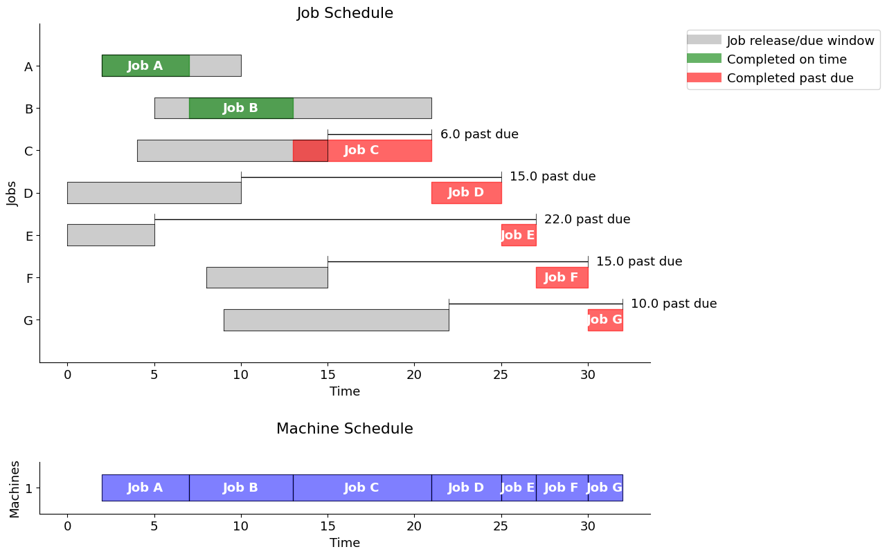
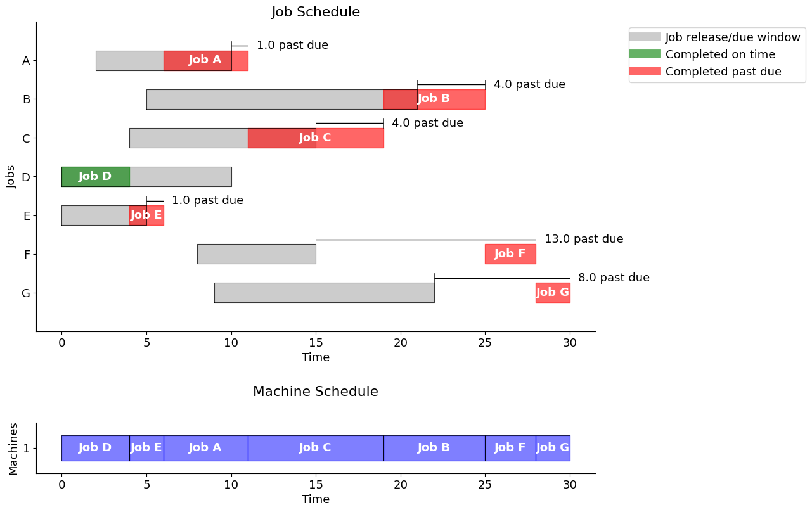
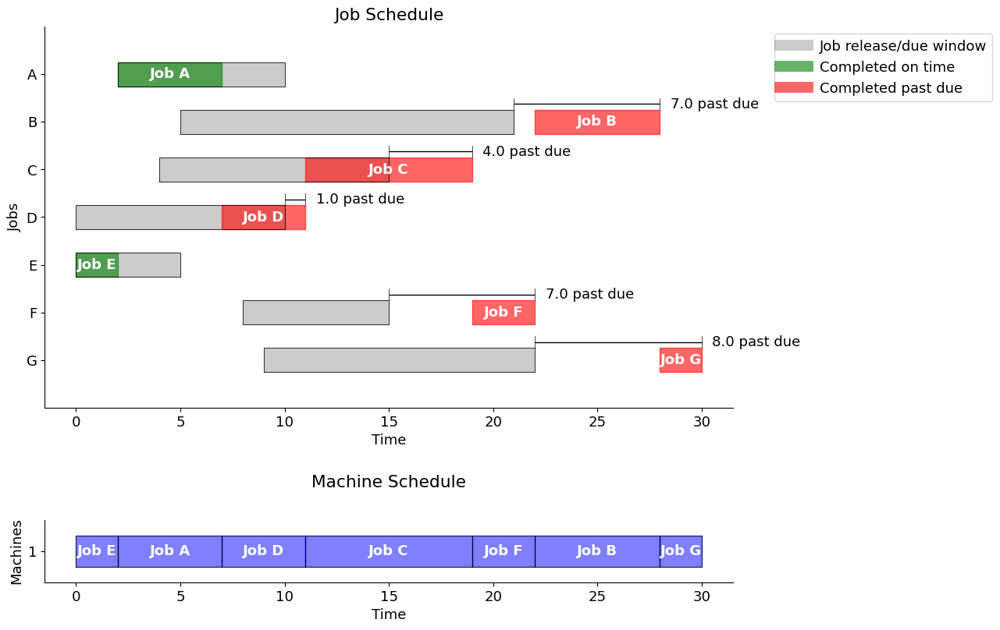
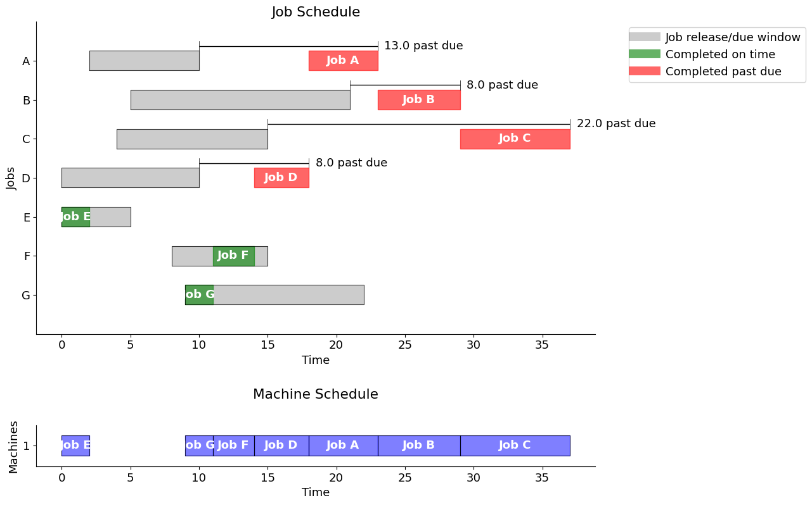
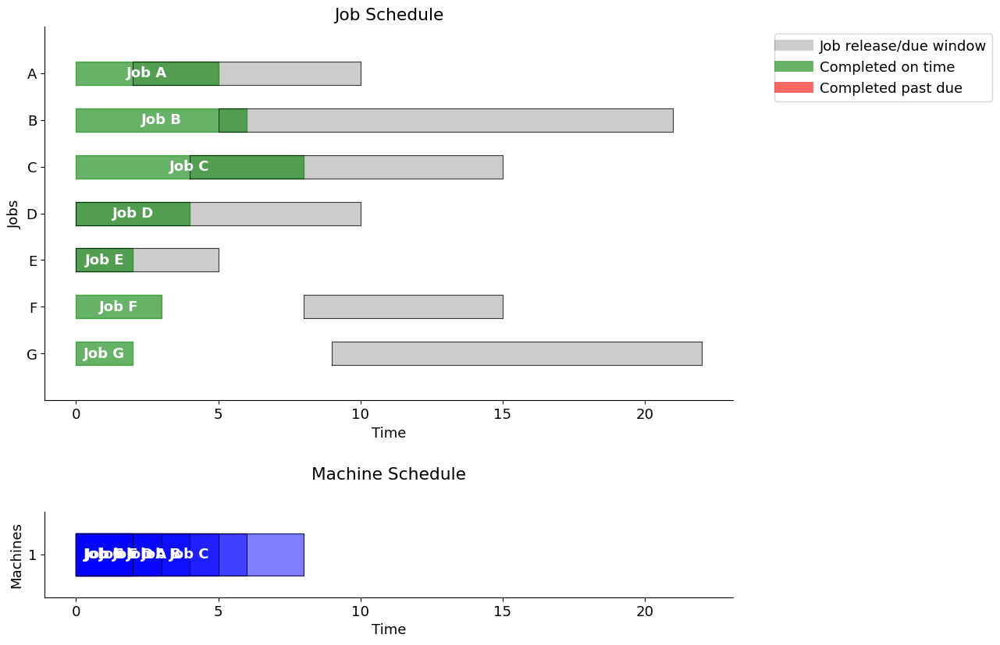
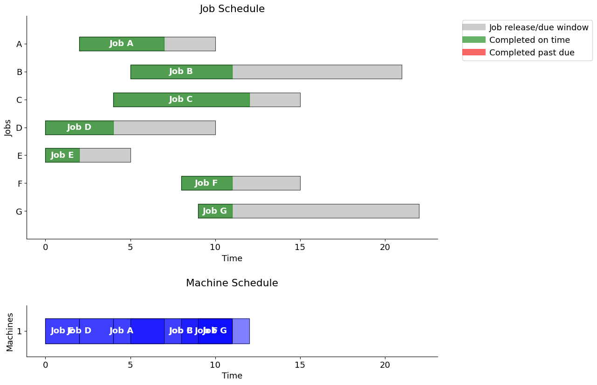
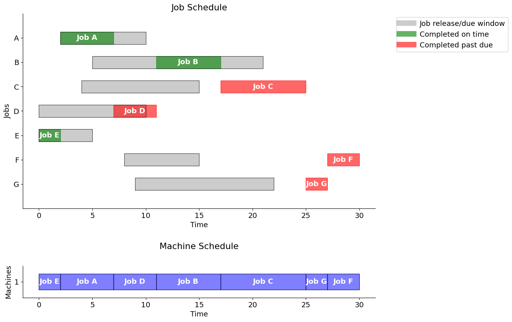
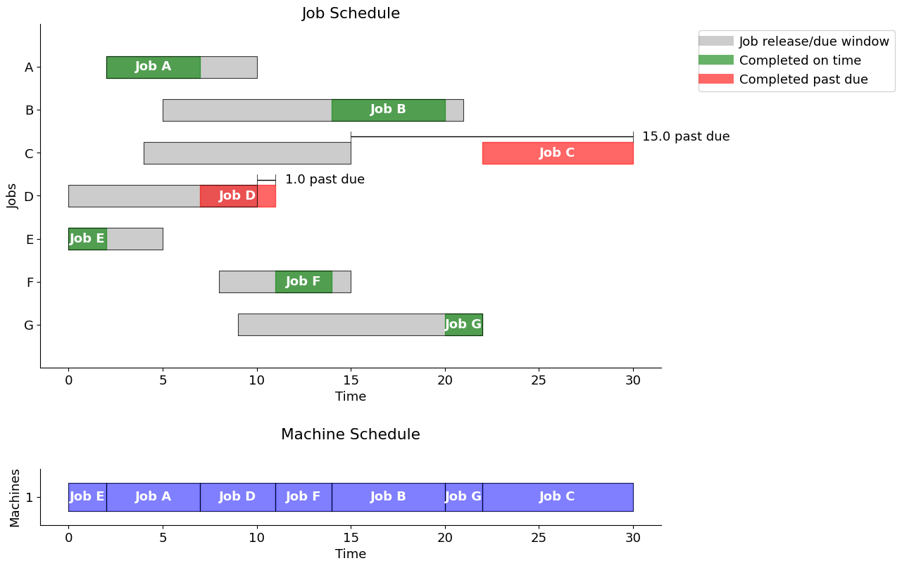
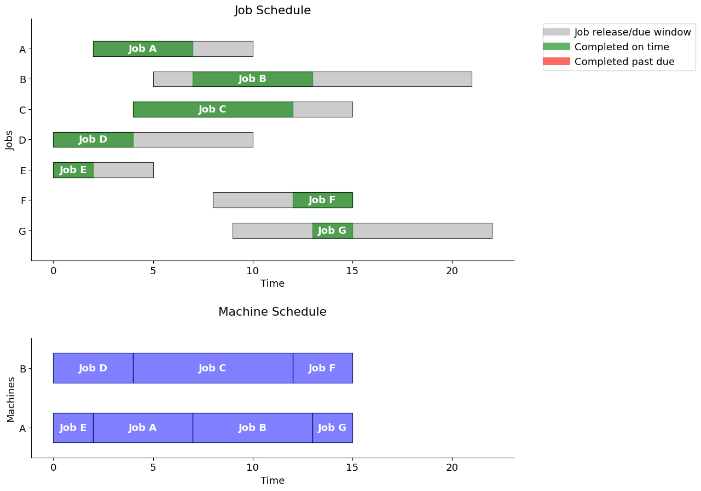

solver = "appsi_highs"
import pyomo.environ as pyo
SOLVER = pyo.SolverFactory(solver)
assert SOLVER.available(), f"Solver {solver} is not available."Ex. D2: Scheduling Problems
Scheduling problems are an important class of problems in Operations Research. They consist of distributing the execution of a set of tasks over time, subject to various constraints–sequence of tasks, due dates, limited resource availability–with the objective to optimize a criterion, such as the total duration, the number of tasks that finish late, etc.
These problems may come from many different fields: project management, industrial production, telecommunications, information systems, transport, timetabling. With the exception of the well-known case of (empirical) project scheduling, these problems are difficult to solve to optimality if they grow large. Nevertheless, instances of reasonable size (such as those encountered in the CDT) have become solvable by LP, thanks to the power of recent software. See the CPLEX Benchmark example.
The examples considered here will cover:
- empirical project scheduling;
- single-machine scheduling, usually for a critical, bottle-neck machine;
- flow-shop scheduling with production lines, where all products/jobs are run through in the same order;
- job shop scheduling, where every product/job has a different processing order.
The methods covered here, are:
- empirical distribution approaches,
- optimal approaches (MILP),
- Big-M method,
- disjunctive programming.
Together, these will provide all the basic building-blocks needed for the CDT examples and use-cases.
Background Material
- for basics of LP and MILP see the introductory
pyomotutorials above; - for advanced cases with uncertainty see below.
Project Scheduling
Given a set of tasks and their durations, we seek the earliest completion time, or any function of it. There is a precedence graph for the tasks.
One variant consists of earning a bonus for every week the work finishes early. But this requires additional expenses (manpower, equipment). When should the project be completed to maximize profit?
In general, resources will be limited - please see the Resource Constrained Project Scheduling Problem RCPSP below.
Single-Machine Job Sequencing
In workshops it frequently happens that a single machine determines the throughput of the entire production—for example, a machine of which only one is available, the slowest machine in a production line, etc. This machine is called the critical machine or the bottleneck. In such a case it is important to schedule the tasks that need to be performed by this machine in the best possible way.
The aim of the problem is to provide a simple model for scheduling operations on a single machine and that may be used with different objective functions. We shall see here how to minimize: - the total processing time, - the average processing time, and - the total tardiness.
We are given the following elements. - A set of tasks (or jobs) is to be processed on a single machine. - The execution of tasks is non-preemptive (i.e. an operation may not be interrupted before its completion). - For every task \(i\) its release date and duration are given. - For the last optimization criterion (total tardiness), a due date (latest completion time) is also required to measure the tardiness, that is, the amount of time by which the completion of jobs exceeds their respective due dates.
What is the optimal value for each of the objectives: minimizing the total duration of the schedule (makespan), the mean processing time or the total tardiness?
In this example, we will compare: - empirical scheduling methods, - optimized scheduling using disjunctions.
Model Formulation
Given a set \(\mathcal{J} = \{ J_1, J_2, \ldots, J_n \}\) of \(n\) jobs, and the start/release time \(s_j,\) the duration \(d_j\) and the due date \(t_j,\) for each job \(j=1,\ldots,n,\) find a schedule that satisfies a given criterion. These criteria will either be empirical rules, or optimal objectives.
We begin by loading the necessry modules and checking the vailability of the chosen solver.
import pandas as pd
import matplotlib.pyplot as plt
from matplotlib.lines import Line2DJob data
The data is given as a Pandas dataframe in which each row corresponds to a job, its release time, its duration, and its due date. This data could also be read from a suitable json input file.
Objective
The problem is to sequence the jobs on the machine to meet the due dates, or show that no such sequence is possible.
jobs = pd.DataFrame(
{
"A": {"release": 2, "duration": 5, "due": 10},
"B": {"release": 5, "duration": 6, "due": 21},
"C": {"release": 4, "duration": 8, "due": 15},
"D": {"release": 0, "duration": 4, "due": 10},
"E": {"release": 0, "duration": 2, "due": 5},
"F": {"release": 8, "duration": 3, "due": 15},
"G": {"release": 9, "duration": 2, "due": 22},
}
).T
display(jobs)| release | duration | due | |
|---|---|---|---|
| A | 2 | 5 | 10 |
| B | 5 | 6 | 21 |
| C | 4 | 8 | 15 |
| D | 0 | 4 | 10 |
| E | 0 | 2 | 5 |
| F | 8 | 3 | 15 |
| G | 9 | 2 | 22 |
Schedule data
A schedule is also represented here by a Pandas dataframe indexed by job names. The columns indicate the start, finish, and the amount by each job is past due.
The following function creates the simplest schedule, corresponding to the scenario in which jobs are executed in the (lexical) order given by the jobs dataframe.
def schedule_jobs(jobs, seq):
schedule = pd.DataFrame(index=jobs.index)
t = 0
for job in seq:
t = max(t, jobs.loc[job]["release"])
schedule.loc[job, "start"] = t
t += jobs.loc[job, "duration"]
schedule.loc[job, "finish"] = t
schedule.loc[job, "past"] = max(0, t - jobs.loc[job, "due"])
return schedule
schedule = schedule_jobs(jobs, jobs.index)
schedule| start | finish | past | |
|---|---|---|---|
| A | 2.0 | 7.0 | 0.0 |
| B | 7.0 | 13.0 | 0.0 |
| C | 13.0 | 21.0 | 6.0 |
| D | 21.0 | 25.0 | 15.0 |
| E | 25.0 | 27.0 | 22.0 |
| F | 27.0 | 30.0 | 15.0 |
| G | 30.0 | 32.0 | 10.0 |
sum(schedule.loc[:, "past"]) # total lateness/tardiness68.0Gantt chart
A classical way of visualizing scheduling data is a Gantt chart. The next cell defines a function gantt that plots a Gantt chart given JOBS and SCHEDULE information.
The function also computes and prints the total past due, or lateness/tardiness.
Two charts are presented: one showing the job schedule and the other showing the machine schedule. If no explicit machine information is contained in SCHEDULE, then it is assumed to be a single machine operation.
def gantt(jobs, schedule, title="", pastdue='TRUE'):
w = 0.25 # bar width
plt.rcParams.update({"font.size": 13})
fig, axs = plt.subplots(nrows=2, ncols=1, figsize=(13, 2*0.7 * len(jobs.index)),
tight_layout=True)
# Jobs plot
for k, job in enumerate(jobs.index):
r = jobs.loc[job, "release"]
d = jobs.loc[job, "due"]
s = schedule.loc[job, "start"]
f = schedule.loc[job, "finish"]
# Show job release-due window
axs[0].fill_between(
[r, d], [-k - w, -k - w], [-k + w, -k + w], lw=1, color="k", alpha=0.2
)
axs[0].plot(
[r, r, d, d, r], [-k - w, -k + w, -k + w, -k - w, -k - w], lw=0.5, color="k"
)
# Show job start-finish window
color = "g" if f <= d else "r"
axs[0].fill_between(
[s, f], [-k - w, -k - w], [-k + w, -k + w], color=color, alpha=0.6
)
axs[0].text(
(s + f) / 2.0,
-k,
"Job " + job,
color="white",
weight="bold",
ha="center",
va="center",
)
# If past due
if pastdue=='TRUE':
if f > d:
axs[0].plot([d] * 2, [-k + w, -k + 2 * w], lw=0.5, color="k")
axs[0].plot([f] * 2, [-k + w, -k + 2 * w], lw=0.5, color="k")
axs[0].plot([d, f], [-k + 1.5 * w] * 2, solid_capstyle="butt", lw=1, color="k")
axs[0].text(
f + 0.5,
-k + 1.5 * w,
f"{schedule.loc[job, 'past']:.1f} past due",
va="center",
)
if pastdue=='TRUE':
total_past_due = schedule["past"].sum()
axs[0].set_ylim(-len(jobs.index), 1)
if pastdue=='TRUE':
print(f'\nUsing the "{title}" strategy, the total past due is {total_past_due:.1f}\n')
axs[0].set_xlabel("Time")
axs[0].set_ylabel("Jobs")
axs[0].set_yticks([0,-1,-2,-3,-4,-5,-6],['A','B','C','D','E','F','G'])
#axs[0].set_yticks(range(len(jobs)), jobs.index[::-1])
axs[0].spines["right"].set_visible(False)
#axs[0].spines["left"].set_visible(False)
axs[0].spines["top"].set_visible(False)
custom_lines = [
Line2D([0], [0], c="k", lw=10, alpha=0.2),
Line2D([0], [0], c="g", lw=10, alpha=0.6),
Line2D([0], [0], c="r", lw=10, alpha=0.6),
]
axs[0].legend(
custom_lines,
["Job release/due window", "Completed on time", "Completed past due"],
bbox_to_anchor=(1.05, 1),
loc="upper left",
)
axs[0].set_title('Job Schedule')
# Machines plot
SCHEDULE = schedule.T.to_dict()
for j in SCHEDULE.keys():
if 'machine' not in SCHEDULE[j].keys():
SCHEDULE[j]['machine'] = 1
MACHINES = sorted(set([SCHEDULE[j]['machine'] for j in SCHEDULE.keys()]))
for j in sorted(SCHEDULE.keys()):
idx = MACHINES.index(SCHEDULE[j]['machine'])
x = SCHEDULE[j]['start']
y = SCHEDULE[j]['finish']
axs[1].fill_between([x,y],[idx-w,idx-w],[idx+w,idx+w], color='blue', alpha=0.5)
axs[1].plot([x,y,y,x,x], [idx-w,idx-w,idx+w,idx+w,idx-w],lw=0.5, color='k')
axs[1].text((SCHEDULE[j]['start'] + SCHEDULE[j]['finish'])/2.0,idx,
'Job ' + j, color='white', weight='bold',
horizontalalignment='center', verticalalignment='center')
xlim = axs[0].get_xlim()
axs[1].set_xlim(xlim)
axs[1].set_ylim(-0.5, len(MACHINES)-0.5)
axs[1].set_yticks(range(len(MACHINES)), MACHINES)
axs[1].set_xlabel("Time")
axs[1].set_ylabel("Machines")
axs[1].spines["right"].set_visible(False)
#axs[1].spines["left"].set_visible(False)
axs[1].spines["top"].set_visible(False)
axs[1].set_aspect(3)
axs[1].set_title('Machine Schedule', pad=30)gantt(jobs, schedule, "job order")
Using the "job order" strategy, the total past due is 68.0

Key performance indicators
As presented above, a given schedule may not meet all of the due time requirements. In fact, a schedule meeting all of the requirements might not even be possible. So given a schedule, it is useful to have a function that computes key performance indicators.
def kpi(JOBS, SCHEDULE):
KPI = {}
KPI['Makespan'] = max(SCHEDULE[job]['finish'] for job in SCHEDULE)
KPI['Max Pastdue'] = max(max(0, SCHEDULE[job]['finish'] - JOBS[job]['due']) for job in SCHEDULE)
KPI['Sum of Pastdue'] = sum(max(0, SCHEDULE[job]['finish'] - JOBS[job]['due']) for job in SCHEDULE)
KPI['Number Pastdue'] = sum(SCHEDULE[job]['finish'] > JOBS[job]['due'] for job in SCHEDULE)
KPI['Number on Time'] = sum(SCHEDULE[job]['finish'] <= JOBS[job]['due'] for job in SCHEDULE)
KPI['Fraction on Time'] = KPI['Number on Time']/len(SCHEDULE)
return KPI
KPI_out = kpi(jobs.T.to_dict(), schedule.T.to_dict())
print("\n KPI for Job Order strategy \n")
print(pd.DataFrame.from_dict(KPI_out, orient='index'))
KPI for Job Order strategy
0
Makespan 32.000000
Max Pastdue 22.000000
Sum of Pastdue 68.000000
Number Pastdue 5.000000
Number on Time 2.000000
Fraction on Time 0.285714Empirical Scheduling Rules
To provide a comparison to scheduling using an optimal MILP model, we first implement three well-known and accepted empirical rules for scheduling jobs on a single machine:
- First in, first out (FIFO)
- Earliest due data (EDD)
- Shortest processing time (SPT)
In cases where there are many jobs, or where allocation must be quasi-immediate, these approaches are commonly employed.
First-in, first-out (FIFO)
One of the most common scheduling rules is to execute jobs in the order they are released for processing, in other words “first-in, first-out” (FIFO). The following cell creates a Pandas dataframe that is indexed by job names and with start time, finish time, and, if past due, the amount by which the job is past due.
The output sequence is determined by a sort of the values by release time, or first available time (“first-in”).
Note the decrease in tardiness, from 68 to 31.
fifo = schedule_jobs(jobs, jobs.sort_values(by="release").index)
gantt(jobs, fifo, "First in, First out")
Using the "First in, First out" strategy, the total past due is 31.0

# print sorted schedule
sorted_fifo = fifo.sort_values(by='start')
display(sorted_fifo)| start | finish | past | |
|---|---|---|---|
| D | 0.0 | 4.0 | 0.0 |
| E | 4.0 | 6.0 | 1.0 |
| A | 6.0 | 11.0 | 1.0 |
| C | 11.0 | 19.0 | 4.0 |
| B | 19.0 | 25.0 | 4.0 |
| F | 25.0 | 28.0 | 13.0 |
| G | 28.0 | 30.0 | 8.0 |
# print KPI's
KPI_out = kpi(jobs.T.to_dict(), fifo.T.to_dict())
print("\n KPI for First In, First Out strategy \n")
print(pd.DataFrame.from_dict(KPI_out, orient='index'))
KPI for First In, First Out strategy
0
Makespan 30.000000
Max Pastdue 13.000000
Sum of Pastdue 31.000000
Number Pastdue 6.000000
Number on Time 1.000000
Fraction on Time 0.142857Earliest due date (EDD)
When due dates are known, a common scheduling rule is to prioritize jobs by due date. This strategy will be familiar to any student deciding which homework assignment should be worked on next…
Note the further decrease of lateness to 27.
edd = schedule_jobs(jobs, jobs.sort_values(by="due").index)
gantt(jobs, edd, "Earliest due date")
Using the "Earliest due date" strategy, the total past due is 27.0

# print sorted schedule
sorted_edd = edd.sort_values(by='start')
display(sorted_edd)| start | finish | past | |
|---|---|---|---|
| E | 0.0 | 2.0 | 0.0 |
| A | 2.0 | 7.0 | 0.0 |
| D | 7.0 | 11.0 | 1.0 |
| C | 11.0 | 19.0 | 4.0 |
| F | 19.0 | 22.0 | 7.0 |
| B | 22.0 | 28.0 | 7.0 |
| G | 28.0 | 30.0 | 8.0 |
# print KPI's
KPI_out = kpi(jobs.T.to_dict(), edd.T.to_dict())
print("\n KPI for Earliest Due Date strategy \n")
print(pd.DataFrame.from_dict(KPI_out, orient='index'))
KPI for Earliest Due Date strategy
0
Makespan 30.000000
Max Pastdue 8.000000
Sum of Pastdue 27.000000
Number Pastdue 5.000000
Number on Time 2.000000
Fraction on Time 0.285714Observations
Note that for EDD, we have two “ties” since the due dates are equal for A and D (10), and for C and F (15). In principle, we should compute the schedule for all the combinations (A before D, D before A, C before F, F before C) and choose the one with the smallest Past Due. In this case, it turns out that scheduling D before A, and F before C (i.e. reverse lexical order), we obtain a better schedule with Sum of Past Due = 23 only, Number of Past Due = 4, and Number on Time = 3. This gives a fraction of 0.43 on time.
Shortest processing time (SPT)
When the job durations are known, another common scheduling rule is to prioritize jobs by their (remaining) processing time.
Note the increase in lateness to 51, due to idle time in the schedule.
spt = schedule_jobs(jobs, jobs.sort_values(by="duration").index)
gantt(jobs, spt, "Shortest Processing Time")
Using the "Shortest Processing Time" strategy, the total past due is 51.0

# print sorted schedule
sorted_spt = spt.sort_values(by='start')
display(sorted_spt)| start | finish | past | |
|---|---|---|---|
| E | 0.0 | 2.0 | 0.0 |
| G | 9.0 | 11.0 | 0.0 |
| F | 11.0 | 14.0 | 0.0 |
| D | 14.0 | 18.0 | 8.0 |
| A | 18.0 | 23.0 | 13.0 |
| B | 23.0 | 29.0 | 8.0 |
| C | 29.0 | 37.0 | 22.0 |
# print KPI's
KPI_out = kpi(jobs.T.to_dict(), spt.T.to_dict())
print("\n KPI for Shortest Processing Time strategy \n")
print(pd.DataFrame.from_dict(KPI_out, orient='index'))
KPI for Shortest Processing Time strategy
0
Makespan 37.000000
Max Pastdue 22.000000
Sum of Pastdue 51.000000
Number Pastdue 4.000000
Number on Time 3.000000
Fraction on Time 0.428571Optimal Scheduling: Disjunctive Programming
Following a specific/empirical rule, we are not guaranteed to obtain an optimal schedule. This motivates us to formulate a proper optimization problem.
1. Decision Variables
We introduce the following three decision variables for every job \(j\)
| Symbol | Description |
|---|---|
| \(\text{release}_j\) | when job \(j\) is available |
| \(\text{duration}_j\) | how long job \(j\) takes |
| \(\text{due}_j\) | when job \(j\) is due |
The essential decision variables are the times at which each job starts processing, but it is convenient to add auxiliary variables defining the times at which each job finishes and the amount by which each job is past due.
| Symbol | Description |
|---|---|
| \(\text{start}_j\) | when job \(j\) starts |
| \(\text{finish}_j\) | when job \(j\) finishes |
| \(\text{past}_j\) | how long job \(j\) is past due |
2. Objectives
Depending on application and circumstances, various objectives can be considered. Suitable objectives include:
- the total number of late jobs,
- the longest past due (lateness) interval,
- or the sum of all past due (lateness) intervals.
There are also simpler objectives, such as - minimum total duration (makespan), - or average processing time.
Here, we will consider the optimization problem that minimizes the sum of past-due intervals, that is
\[ \min \sum_j \text{past}_j \]
3. Constraints
Constraints describe the required logical relationships among the decision variables. For example, a job cannot start until it is released for processing
\[ \begin{align*} \text{start}_{j} & \geq \text{release}_{j}\\ \end{align*} \]
Once started, machine processing continues until the job is finished. The finish time for each job is compared to the due time, and any past due interval is stored in the \(\text{past}_j\) decision variable.
\[ \begin{align*} \text{finish}_j & = \text{start}_j + \text{duration}_j \\ \text{past}_{j} & \geq \text{finish}_j - \text{due}_{j} \\ \text{past}_{j} & \geq 0 \end{align*} \]
The final set of constraints require that no pair of jobs be operating on the same machine at the same time. For this purpose, we consider each unique pair (\(i\), \(j\)) where the constraint \(i < j\) is imposed to avoid considering the same pair twice. Then for any unique pair \(i\) and \(j,\) either \(i\) finishes before \(j\) starts, or \(j\) finishes before \(i\) starts. This is expressed as the family of disjunctions,
\[ \begin{align*} \begin{bmatrix} \text{finish}_i \leq \text{start}_j \end{bmatrix} & \veebar \begin{bmatrix} \text{finish}_j \leq \text{start}_i \end{bmatrix} & \forall i < j \end{align*} \]
This model and constraints can be directly translated to Pyomo using the Disjuction component as follows.
def machine_schedule(jobs):
m = pyo.ConcreteModel("Job machine scheduling")
# Create a set of jobs using the dataframe index and a
# set of orderd pairs of distinct jobs (i,j) with i < j
m.JOBS = pyo.Set(initialize=jobs.index)
m.PAIRS = pyo.Set(initialize=m.JOBS * m.JOBS, filter=lambda m, i, j: i < j)
# We set an upper bound on the time horizon to 100
m.maxtime = pyo.Param(initialize=100)
m.start = pyo.Var(m.JOBS, domain=pyo.NonNegativeReals, bounds=(0, m.maxtime))
m.finish = pyo.Var(m.JOBS, domain=pyo.NonNegativeReals, bounds=(0, m.maxtime))
m.past = pyo.Var(m.JOBS, domain=pyo.NonNegativeReals, bounds=(0, m.maxtime))
@m.Constraint(m.JOBS)
def job_release(m, job):
return m.start[job] >= jobs.loc[job, "release"]
@m.Constraint(m.JOBS)
def job_duration(m, job):
return m.finish[job] == m.start[job] + jobs.loc[job, "duration"]
@m.Constraint(m.JOBS)
def past_due_constraint(m, job):
return m.past[job] >= m.finish[job] - jobs.loc[job, "due"]
@m.Disjunction(m.PAIRS, xor=True)
def machine_deconflict(m, job_a, job_b):
return [m.finish[job_a] <= m.start[job_b], m.finish[job_b] <= m.start[job_a]]
@m.Objective(sense=pyo.minimize)
def minimize_past(m):
return sum(m.past[job] for job in m.JOBS)
return m
m = machine_schedule(jobs)
pyo.TransformationFactory("gdp.bigm").apply_to(m)
SOLVER.solve(m)
optimalschedule = pd.DataFrame(
{
"start": m.start.extract_values(),
"finish": m.finish.extract_values(),
"past": m.past.extract_values(),
}
)
display(optimalschedule)
gantt(jobs, optimalschedule, "Minimize total past due")| start | finish | past | |
|---|---|---|---|
| A | 2.0 | 7.0 | -0.0 |
| B | 14.0 | 20.0 | -0.0 |
| C | 22.0 | 30.0 | 15.0 |
| D | 7.0 | 11.0 | 1.0 |
| E | 0.0 | 2.0 | -0.0 |
| F | 11.0 | 14.0 | 0.0 |
| G | 20.0 | 22.0 | -0.0 |
Using the "Minimize total past due" strategy, the total past due is 16.0

# print sorted schedule
sorted_optimalschedule = optimalschedule.sort_values(by='start')
display(sorted_optimalschedule)| start | finish | past | |
|---|---|---|---|
| E | 0.0 | 2.0 | -0.0 |
| A | 2.0 | 7.0 | -0.0 |
| D | 7.0 | 11.0 | 1.0 |
| F | 11.0 | 14.0 | 0.0 |
| B | 14.0 | 20.0 | -0.0 |
| G | 20.0 | 22.0 | -0.0 |
| C | 22.0 | 30.0 | 15.0 |
Conclusion: Empirical vs 0ptimal
The solution obtained solving the optimization problem, TPD = 16, outperforms that derived from any of the empirical rules used above, of which the best was EDD with TPD = 27. Nonetheless, heuristic techniques become essential when addressing very large scheduling problems.
Optimal Scheduling: Big-M method
For comparison, we could also implement a standard MILP using the big-M method. For this, we introduce a binary variable \(z_{ij} \in \{0,1\}\) for each disjunctive constraint above.
\[ \begin{align*} \text{finish}_i & \leq \text{start}_j + M z_{ij} \\ \text{finish}_j & \leq \text{start}_i + M (1 - z_{ij}). \end{align*} \]
This creates an equivalent MILP model that leads to the same solution as obtained above by the disjunctive approach, but it introduces many more variables and is usually slower to solve when the problem size is large.
Here, we take a step-by-step approach to the construction of the “Big-M” model.
Step 1. An incomplete bare-bones model
We start this model building exercise with just enough variables and constraints to get an answer. This is not a complete model and will therefore give non-physical answers. But it does give a scaffold for further model building.
This first model includes:
- decision variables for the start and finish of each job,
- a decision variable for makespan,
- and constraints that define the relationships among these decision variables.
The objective function is to minimize the makespan.
def opt_schedule(JOBS):
# quick-fix
#JOBS = JOBS.T.to_dict()
# create model
m = pyo.ConcreteModel()
# index set to simplify notation
m.JOBS = pyo.Set(initialize=JOBS.keys())
# decision variables
m.start = pyo.Var(m.JOBS, domain=pyo.NonNegativeReals)
m.finish = pyo.Var(m.JOBS, domain=pyo.NonNegativeReals)
# additional decision variables for use in the objecive
m.makespan = pyo.Var(domain=pyo.NonNegativeReals)
# objective function
m.OBJ = pyo.Objective(expr = m.makespan, sense = pyo.minimize)
# constraints
m.c = pyo.ConstraintList()
for j in m.JOBS:
m.c.add(m.finish[j] == m.start[j] + JOBS[j]['duration'])
m.c.add(m.finish[j] <= m.makespan)
pyo.SolverFactory('cbc').solve(m)
SCHEDULE = {}
for j in m.JOBS:
SCHEDULE[j] = {'machine': 1, 'start': m.start[j](), 'finish': m.start[j]() + JOBS[j]['duration']}
return m #SCHEDULE
m = opt_schedule(jobs.T.to_dict())
optimalschedule = pd.DataFrame(
{
"start": m.start.extract_values(),
"finish": m.finish.extract_values(),
# "past": m.past.extract_values(),
}
)
display(optimalschedule)
# print KPI's
KPI_out = kpi(jobs.T.to_dict(), optimalschedule.T.to_dict())
print("\n KPI for Bare-Bones Model \n")
print(pd.DataFrame.from_dict(KPI_out, orient='index'),"\n")
# output graphics for schedule by job, by machine
gantt(jobs, optimalschedule, "Bare-Bones Model", pastdue='FALSE')| start | finish | |
|---|---|---|
| A | 0.0 | 5.0 |
| B | 0.0 | 6.0 |
| C | 0.0 | 8.0 |
| D | 0.0 | 4.0 |
| E | 0.0 | 2.0 |
| F | 0.0 | 3.0 |
| G | 0.0 | 2.0 |
KPI for Bare-Bones Model
0
Makespan 8.0
Max Pastdue 0.0
Sum of Pastdue 0.0
Number Pastdue 0.0
Number on Time 7.0
Fraction on Time 1.0

Step 2. Add release time information
Obviously some jobs are being started before they are released for processing. The next version of the model adds this constraint.
def opt_schedule(JOBS):
# create model
m = pyo.ConcreteModel()
# index set to simplify notation
m.JOBS = pyo.Set(initialize=JOBS.keys())
# decision variables
m.start = pyo.Var(m.JOBS, domain=pyo.NonNegativeReals)
m.finish = pyo.Var(m.JOBS, domain=pyo.NonNegativeReals)
# additional decision variables for use in the objecive
m.makespan = pyo.Var(domain=pyo.NonNegativeReals)
# objective function
m.OBJ = pyo.Objective(expr = m.makespan, sense = pyo.minimize)
# constraints
m.c = pyo.ConstraintList()
for j in m.JOBS:
m.c.add(m.finish[j] == m.start[j] + JOBS[j]['duration'])
m.c.add(m.finish[j] <= m.makespan)
m.c.add(m.start[j] >= JOBS[j]['release']) # release constraint
pyo.SolverFactory('cbc').solve(m)
SCHEDULE = {}
for j in m.JOBS:
SCHEDULE[j] = {'machine': 1, 'start': m.start[j](), 'finish': m.start[j]() + JOBS[j]['duration']}
return m #SCHEDULE
m = opt_schedule(jobs.T.to_dict())
optimalschedule = pd.DataFrame(
{
"start": m.start.extract_values(),
"finish": m.finish.extract_values(),
# "past": m.past.extract_values(),
}
)
display(optimalschedule)
# print KPI's
KPI_out = kpi(jobs.T.to_dict(), optimalschedule.T.to_dict())
print("\n KPI for Bare-Bones Model \n")
print(pd.DataFrame.from_dict(KPI_out, orient='index'),"\n")
# output graphics for schedule by job, by machine
gantt(jobs, optimalschedule, "Release Constraint Model", pastdue='FALSE')
#SCHEDULE = opt_schedule(JOBS)
#gantt(JOBS, SCHEDULE)
#kpi(JOBS, SCHEDULE)| start | finish | |
|---|---|---|
| A | 2.0 | 7.0 |
| B | 5.0 | 11.0 |
| C | 4.0 | 12.0 |
| D | 0.0 | 4.0 |
| E | 0.0 | 2.0 |
| F | 8.0 | 11.0 |
| G | 9.0 | 11.0 |
KPI for Bare-Bones Model
0
Makespan 12.0
Max Pastdue 0.0
Sum of Pastdue 0.0
Number Pastdue 0.0
Number on Time 7.0
Fraction on Time 1.0

Step 3. Machine conflict constraints
The remaining problem is the overlap of the jobs on the machine, which can only execute one job at a time. To remedy this, we must add a conflict constraint.
The big-M formulation expresses the conflict constraint by forcing the jobs to have no overlap, i.e. the next job in the schedule cannot start before its predecessor has finished.
def opt_schedule(JOBS):
# create model
m = pyo.ConcreteModel()
# index set to simplify notation
m.JOBS = pyo.Set(initialize=JOBS.keys())
m.PAIRS = pyo.Set(initialize = m.JOBS * m.JOBS, dimen=2, filter=lambda m, j, k : j < k)
# decision variables
m.start = pyo.Var(m.JOBS, domain=pyo.NonNegativeReals)
m.finish = pyo.Var(m.JOBS, domain=pyo.NonNegativeReals)
m.y = pyo.Var(m.PAIRS, domain=pyo.Binary)
# additional decision variables for use in the objecive
m.makespan = pyo.Var(domain=pyo.NonNegativeReals)
# objective function
m.OBJ = pyo.Objective(expr = m.makespan, sense = pyo.minimize)
# constraints
m.c = pyo.ConstraintList()
for j in m.JOBS:
m.c.add(m.finish[j] == m.start[j] + JOBS[j]['duration'])
m.c.add(m.finish[j] <= m.makespan)
m.c.add(m.start[j] >= JOBS[j]['release'])
M = 100.0
for j,k in m.PAIRS:
m.c.add(m.finish[j] <= m.start[k] + M*m.y[j,k])
m.c.add(m.finish[k] <= m.start[j] + M*(1 - m.y[j,k]))
pyo.SolverFactory('cbc').solve(m)
SCHEDULE = {}
for j in m.JOBS:
SCHEDULE[j] = {'machine': 1, 'start': m.start[j](), 'finish': m.start[j]() + JOBS[j]['duration']}
return m #SCHEDULE
m = opt_schedule(jobs.T.to_dict())
optimalschedule = pd.DataFrame(
{
"start": m.start.extract_values(),
"finish": m.finish.extract_values(),
# "past": m.past.extract_values(),
}
)
display(optimalschedule)
# print KPI's
KPI_out = kpi(jobs.T.to_dict(), optimalschedule.T.to_dict())
print("\n KPIs for Big-M Model \n")
print(pd.DataFrame.from_dict(KPI_out, orient='index'),"\n")
# output graphics for schedule by job, by machine
gantt(jobs, optimalschedule, "Big-M Model", pastdue='FALSE')| start | finish | |
|---|---|---|
| A | 2.0 | 7.0 |
| B | 11.0 | 17.0 |
| C | 17.0 | 25.0 |
| D | 7.0 | 11.0 |
| E | 0.0 | 2.0 |
| F | 27.0 | 30.0 |
| G | 25.0 | 27.0 |
KPIs for Big-M Model
0
Makespan 30.000000
Max Pastdue 15.000000
Sum of Pastdue 31.000000
Number Pastdue 4.000000
Number on Time 3.000000
Fraction on Time 0.428571

Step 4. Improved objective function: past due
Until now, we have used a makespan objective. A better objective is the sum of past dues, as was implemented above in the empirical examples.
def opt_schedule(JOBS):
# create model
m = pyo.ConcreteModel()
# index set to simplify notation
m.JOBS = pyo.Set(initialize=JOBS.keys())
m.PAIRS = pyo.Set(initialize = m.JOBS * m.JOBS, dimen=2, filter=lambda m, j, k : j < k)
# decision variables
m.start = pyo.Var(m.JOBS, domain=pyo.NonNegativeReals)
m.finish = pyo.Var(m.JOBS, domain=pyo.NonNegativeReals)
m.past = pyo.Var(m.JOBS, domain=pyo.NonNegativeReals)
m.y = pyo.Var(m.PAIRS, domain=pyo.Binary)
# additional decision variables for use in the objecive
m.makespan = pyo.Var(domain=pyo.NonNegativeReals)
# objective function
m.OBJ = pyo.Objective(expr = sum(m.past[j] for j in m.JOBS), sense = pyo.minimize)
# constraints
m.c = pyo.ConstraintList()
for j in m.JOBS:
m.c.add(m.finish[j] == m.start[j] + JOBS[j]['duration'])
m.c.add(m.finish[j] <= m.makespan)
m.c.add(m.start[j] >= JOBS[j]['release'])
m.c.add(m.finish[j] <= JOBS[j]['due'] + m.past[j])
M = 100.0
for j,k in m.PAIRS:
m.c.add(m.finish[j] <= m.start[k] + M*m.y[j,k])
m.c.add(m.finish[k] <= m.start[j] + M*(1 - m.y[j,k]))
pyo.SolverFactory('cbc').solve(m)
SCHEDULE = {}
for j in m.JOBS:
SCHEDULE[j] = {'machine': 1, 'start': m.start[j](), 'finish': m.start[j]() + JOBS[j]['duration']}
return m #SCHEDULE
# Solve and print
m = opt_schedule(jobs.T.to_dict())
optimalschedule = pd.DataFrame(
{
"start": m.start.extract_values(),
"finish": m.finish.extract_values(),
"past": m.past.extract_values(),
}
)
display(optimalschedule)
# print KPI's
KPI_out = kpi(jobs.T.to_dict(), optimalschedule.T.to_dict())
print("\n KPIs for Big-M Past Due Model \n")
print(pd.DataFrame.from_dict(KPI_out, orient='index'),"\n")
# output graphics for schedule by job, by machine
gantt(jobs, optimalschedule, "Big-M Past Due Model", pastdue='TRUE')| start | finish | past | |
|---|---|---|---|
| A | 2.0 | 7.0 | 0.0 |
| B | 14.0 | 20.0 | 0.0 |
| C | 22.0 | 30.0 | 15.0 |
| D | 7.0 | 11.0 | 1.0 |
| E | 0.0 | 2.0 | 0.0 |
| F | 11.0 | 14.0 | 0.0 |
| G | 20.0 | 22.0 | 0.0 |
KPIs for Big-M Past Due Model
0
Makespan 30.000000
Max Pastdue 15.000000
Sum of Pastdue 16.000000
Number Pastdue 2.000000
Number on Time 5.000000
Fraction on Time 0.714286
Using the "Big-M Past Due Model" strategy, the total past due is 16.0

Observations
We notice the improvement here.
- The total lateness has decreased from 31 to 16.
- The number of late jobs is only 2, compared to 4 previously.
Multiple Machines: Big-M Formulation
The case of multiple machines requires a modest extension of model described above. Given a set \(M\) of machines, we introduce an additional decision binary variable \(z_{j,m}\) indicating if job \(j\) has been assigned to machine \(m\). The additional constraints
\[ \begin{align*} \sum_{m\in M}z_{j,m} & = 1 & \forall j \end{align*} \]
require each job to be assigned to exactly one machine for processing.
If both jobs \(j\) and \(k\) have been assigned to machine \(m\), then the disjunctive ordering constraints must apply. This logic is equivalent to the following constraints for \(j < k\).
\[ \begin{align*} \text{start}_{j}+\text{duration}_{j} & \leq \text{start}_{k}+My_{j,k} + M(1-z_{j,m}) + M(1-z_{k,m})\\ \text{start}_{k}+\text{duration}_{k} & \leq \text{start}_{j}+M(1-y_{j,k}) + M(1-z_{j,m}) + M(1-z_{k,m})) \end{align*} \]
MACHINES = ['A','B']
def schedule_machines(JOBS, MACHINES):
# create model
m = pyo.ConcreteModel()
# index set to simplify notation
m.J = pyo.Set(initialize=JOBS.keys())
m.M = pyo.Set(initialize=MACHINES)
m.PAIRS = pyo.Set(initialize = m.J * m.J, dimen=2, filter=lambda m, j, k : j < k)
# decision variables
m.start = pyo.Var(m.J, bounds=(0, 1000))
m.makespan = pyo.Var(domain=pyo.NonNegativeReals)
m.past = pyo.Var(m.J, domain=pyo.NonNegativeReals)
m.early = pyo.Var(m.J, domain=pyo.NonNegativeReals)
# additional decision variables for use in the objecive
m.ispastdue = pyo.Var(m.J, domain=pyo.Binary)
m.maxpastdue = pyo.Var(domain=pyo.NonNegativeReals)
# for binary assignment of jobs to machines
m.z = pyo.Var(m.J, m.M, domain=pyo.Binary)
# for modeling disjunctive constraints
m.y = pyo.Var(m.PAIRS, domain=pyo.Binary)
BigM = max([JOBS[j]['release'] for j in m.J]) + sum([JOBS[j]['duration'] for j in m.J])
m.OBJ = pyo.Objective(expr = sum(m.past[j] for j in m.J) + m.makespan - sum(m.early[j] for j in m.J), sense = pyo.minimize)
m.c1 = pyo.Constraint(m.J, rule=lambda m, j:
m.start[j] >= JOBS[j]['release'])
m.c2 = pyo.Constraint(m.J, rule=lambda m, j:
m.start[j] + JOBS[j]['duration'] + m.early[j] == JOBS[j]['due'] + m.past[j])
m.c3 = pyo.Constraint(m.J, rule=lambda m, j:
sum(m.z[j,mach] for mach in m.M) == 1)
m.c4 = pyo.Constraint(m.J, rule=lambda m, j:
m.past[j] <= BigM*m.ispastdue[j])
m.c5 = pyo.Constraint(m.J, rule=lambda m, j:
m.past[j] <= m.maxpastdue)
m.c6 = pyo.Constraint(m.J, rule=lambda m, j:
m.start[j] + JOBS[j]['duration'] <= m.makespan)
m.d1 = pyo.Constraint(m.M, m.PAIRS, rule = lambda m, mach, j, k:
m.start[j] + JOBS[j]['duration'] <= m.start[k] + BigM*(m.y[j,k] + (1-m.z[j,mach]) + (1-m.z[k,mach])))
m.d2 = pyo.Constraint(m.M, m.PAIRS, rule = lambda m, mach, j, k:
m.start[k] + JOBS[k]['duration'] <= m.start[j] + BigM*((1-m.y[j,k]) + (1-m.z[j,mach]) + (1-m.z[k,mach])))
pyo.SolverFactory('cbc').solve(m).write()
SCHEDULE = {}
for j in m.J:
SCHEDULE[j] = {
'start': m.start[j](),
'finish': m.start[j]() + JOBS[j]['duration'],
'machine': [mach for mach in MACHINES if m.z[j,mach]()][0]
}
return m, SCHEDULE
# Solve and print
m, SCHED = schedule_machines(jobs.T.to_dict(), MACHINES)
# Restructure into column-oriented dict
SCD = {
'start': {job: data['start'] for job, data in SCHED.items()},
'finish': {job: data['finish'] for job, data in SCHED.items()},
'machine': {job: data['machine'] for job, data in SCHED.items()},
}
# Convert to DataFrame (job names become the index)
optsched = pd.DataFrame(SCD)
optsched.index.name = 'job'
display(optsched)
# print KPI's
KPI_out = kpi(jobs.T.to_dict(), optsched.T.to_dict())
print("\n KPIs for Big-M Multiple Machine Model \n")
print(pd.DataFrame.from_dict(KPI_out, orient='index'),"\n")
# output graphics for schedule by job, by machine
gantt(jobs, optsched, "Big-M Multiple Machine Model", pastdue='FALSE')# ==========================================================
# = Solver Results =
# ==========================================================
# ----------------------------------------------------------
# Problem Information
# ----------------------------------------------------------
Problem:
- Name: unknown
Lower bound: -15.0
Upper bound: -15.0
Number of objectives: 1
Number of constraints: 98
Number of variables: 50
Number of binary variables: 42
Number of integer variables: 42
Number of nonzeros: 15
Sense: minimize
# ----------------------------------------------------------
# Solver Information
# ----------------------------------------------------------
Solver:
- Status: ok
User time: -1.0
System time: 0.25
Wallclock time: 0.28
Termination condition: optimal
Termination message: Model was solved to optimality (subject to tolerances), and an optimal solution is available.
Statistics:
Branch and bound:
Number of bounded subproblems: 34
Number of created subproblems: 34
Black box:
Number of iterations: 3499
Error rc: 0
Time: 0.3008120059967041
# ----------------------------------------------------------
# Solution Information
# ----------------------------------------------------------
Solution:
- number of solutions: 0
number of solutions displayed: 0| start | finish | machine | |
|---|---|---|---|
| job | |||
| A | 2.0 | 7.0 | B |
| B | 7.0 | 13.0 | B |
| C | 4.0 | 12.0 | A |
| D | 0.0 | 4.0 | A |
| E | 0.0 | 2.0 | B |
| F | 12.0 | 15.0 | A |
| G | 13.0 | 15.0 | B |
KPIs for Big-M Multiple Machine Model
0
Makespan 15.0
Max Pastdue 0.0
Sum of Pastdue 0.0
Number Pastdue 0.0
Number on Time 7.0
Fraction on Time 1.0
Multiple Machines: Disjunctive Formulation
We solve the same multi-machine problem using Pyomo’s disjunctive capabilities. The results obtained are identical, but the CPUI times are different - see Observations below.
from pyomo.gdp import Disjunct, Disjunction
MACHINES = ['A','B']
def schedule_machines(JOBS, MACHINES):
# create model
m = pyo.ConcreteModel()
# index set to simplify notation
m.J = pyo.Set(initialize=JOBS.keys())
m.M = pyo.Set(initialize=MACHINES)
m.PAIRS = pyo.Set(initialize = m.J * m.J, dimen=2, filter=lambda m, j, k : j < k)
# decision variables
m.start = pyo.Var(m.J, bounds=(0, 1000))
m.makespan = pyo.Var(domain=pyo.NonNegativeReals)
m.pastdue = pyo.Var(m.J, bounds=(0, 1000))
m.early = pyo.Var(m.J, bounds=(0, 10000))
# additional decision variables for use in the objecive
m.ispastdue = pyo.Var(m.J, domain=pyo.Binary)
m.maxpastdue = pyo.Var(domain=pyo.NonNegativeReals)
# for binary assignment of jobs to machines
m.z = pyo.Var(m.J, m.M, domain=pyo.Binary)
# for modeling disjunctive constraints
BigM = max([JOBS[j]['release'] for j in m.J]) + sum([JOBS[j]['duration'] for j in m.J])
m.OBJ = pyo.Objective(expr = sum(m.pastdue[j] for j in m.J) + m.makespan - sum(m.early[j] for j in m.J), sense = pyo.minimize)
# job starts after it is released
m.c1 = pyo.Constraint(m.J, rule=lambda m, j: m.start[j] >= JOBS[j]['release'])
# defines early and pastdue
m.c2 = pyo.Constraint(m.J, rule=lambda m, j: m.start[j] + JOBS[j]['duration'] + m.early[j] == JOBS[j]['due'] + m.pastdue[j])
m.d1 = Disjunction(m.J, rule=lambda m, j: [m.early[j]==0, m.pastdue[j]==0])
# each job is assigned to one and only one machine
m.c3 = pyo.Constraint(m.J, rule=lambda m, j: sum(m.z[j, mach] for mach in m.M) == 1)
# defines a binary variable indicating if a job is past due
m.c4 = Disjunction(m.J, rule=lambda m, j: [m.pastdue[j] == 0, m.ispastdue[j] == 1])
# all jobs must be finished before max pastdue
m.c5 = pyo.Constraint(m.J, rule=lambda m, j: m.pastdue[j] <= m.maxpastdue)
# defining make span
m.c6 = pyo.Constraint(m.J, rule=lambda m, j: m.start[j] + JOBS[j]['duration'] <= m.makespan)
# disjuctions
m.d0 = Disjunction(m.M, m.PAIRS, rule = lambda m, mach, j, k:
[m.start[j] + JOBS[j]['duration'] <= m.start[k] + BigM*((1-m.z[j, mach]) + (1-m.z[k, mach])),
m.start[k] + JOBS[k]['duration'] <= m.start[j] + BigM*((1-m.z[j, mach]) + (1-m.z[k, mach]))])
transform = pyo.TransformationFactory('gdp.hull')
transform.apply_to(m)
pyo.SolverFactory('cbc').solve(m).write()
SCHEDULE = {}
for j in m.J:
SCHEDULE[j] = {
'start': m.start[j](),
'finish': m.start[j]() + JOBS[j]['duration'],
'machine': [mach for mach in MACHINES if m.z[j,mach]()][0]
}
return m, SCHEDULE
# Solve and print
m, SCHED = schedule_machines(jobs.T.to_dict(), MACHINES)
# Restructure into column-oriented dict
SCD = {
'start': {job: data['start'] for job, data in SCHED.items()},
'finish': {job: data['finish'] for job, data in SCHED.items()},
'machine': {job: data['machine'] for job, data in SCHED.items()},
}
# Convert to DataFrame (job names become the index)
optsched = pd.DataFrame(SCD)
optsched.index.name = 'job'
display(optsched)
# print KPI's
KPI_out = kpi(jobs.T.to_dict(), optsched.T.to_dict())
print("\n KPIs for Disjunctive Multiple Machine Model \n")
print(pd.DataFrame.from_dict(KPI_out, orient='index'),"\n")
# output graphics for schedule by job, by machine
gantt(jobs, optsched, "Disjunctive Multiple Machine Model", pastdue='FALSE')
#SCHEDULE = schedule_machines(JOBS,MACHINES)
#gantt(JOBS, SCHEDULE)
#kpi(JOBS, SCHEDULE)# ==========================================================
# = Solver Results =
# ==========================================================
# ----------------------------------------------------------
# Problem Information
# ----------------------------------------------------------
Problem:
- Name: unknown
Lower bound: -15.0
Upper bound: -15.0
Number of objectives: 1
Number of constraints: 637
Number of variables: 435
Number of binary variables: 133
Number of integer variables: 133
Number of nonzeros: 15
Sense: minimize
# ----------------------------------------------------------
# Solver Information
# ----------------------------------------------------------
Solver:
- Status: ok
User time: -1.0
System time: 1.07
Wallclock time: 1.12
Termination condition: optimal
Termination message: Model was solved to optimality (subject to tolerances), and an optimal solution is available.
Statistics:
Branch and bound:
Number of bounded subproblems: 308
Number of created subproblems: 308
Black box:
Number of iterations: 6068
Error rc: 0
Time: 1.1413490772247314
# ----------------------------------------------------------
# Solution Information
# ----------------------------------------------------------
Solution:
- number of solutions: 0
number of solutions displayed: 0| start | finish | machine | |
|---|---|---|---|
| job | |||
| A | 2.0 | 7.0 | A |
| B | 7.0 | 13.0 | A |
| C | 4.0 | 12.0 | B |
| D | 0.0 | 4.0 | B |
| E | 0.0 | 2.0 | A |
| F | 12.0 | 15.0 | B |
| G | 13.0 | 15.0 | A |
KPIs for Disjunctive Multiple Machine Model
0
Makespan 15.0
Max Pastdue 0.0
Sum of Pastdue 0.0
Number Pastdue 0.0
Number on Time 7.0
Fraction on Time 1.0

OBSERVATIONS
- The results are identical with those obtained previously using the Big-M approach.
- The CPU time is 1.12 vs 0.28 for the Big-M, a factor of 4X. Even though, in principle, Big-M introduces more variables and takes more time, this is not the case here due to the relatively small problem size.